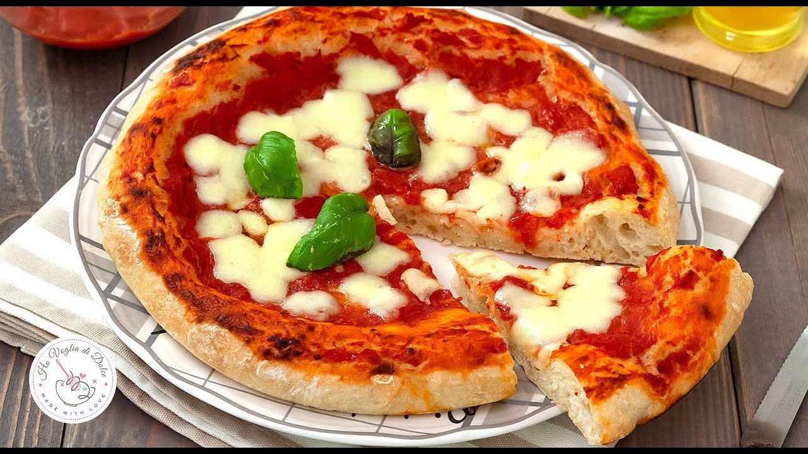

Pizza recipe
Pizza

Description
Pizza, dish of Italian origin consisting of a flattened disk of bread dough topped with some combination of olive oil, oregano, tomato, olives, mozzarella or other cheese, and many other ingredients, baked quickly—usually, in a commercial setting, using a wood-fired oven heated to a very high temperature—and served hot.
Ingredients
- Extra virgin olive oil
- Tomato sauce
- Mozzarella cheese
- Bread flour
- 1 cup of warm water
- 1 package active dry yeast
- 2 teaspoons salt
- 1 teaspoon sugar
Steps
- Proof the yeast
- Make and knead the pizza dough
- Let the dough rise
- Preheat pizza stone
- Divide the dough into two balls
- Prep toppings
- Flatten dough ball, and stretch out into a round
- Brush dough top with olive oil
- Sprinkle pizza peel with corn meal, put flattened dough on top
- Spread with tomato sauce and sprinkle with toppings
- Sprinkle cornmeal on pizza stone, slide pizza onto pizza stone in oven
- Bake pizza